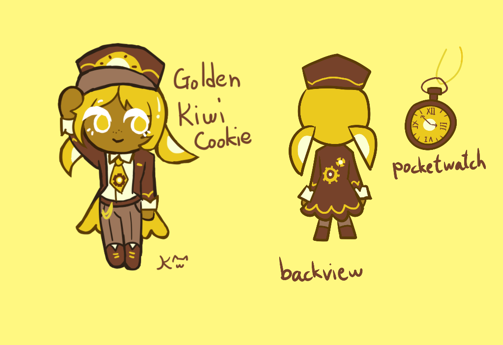

Oh no, did I do something wrong?

Lore facts:
- She has a fascination in trains and engineering since she was young
- She suffers from imposter syndrome, she never feels like she's good enough
- She likes trying out new food, she sometimes orders unusual sandwich combinations during lunch
- She often worry if she's doing badly at her job, but she's actually doing perfectly fine
- She is a relative to Kiwi Cookie
Meta facts:
- This OC is created when the structure of TBD is introduced in a video. My friends wanted to make their own TBD OC, and this was what I came up with